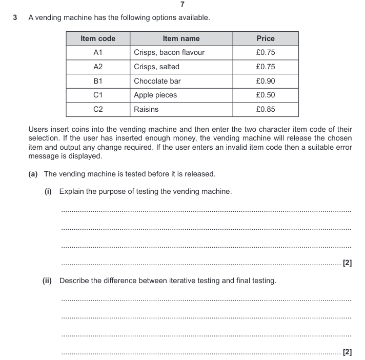

Testing
By Jeetaditya Chatterjee
Press s for speaker notes
What is testing?
What are the types of testing?
Iterative
Final or black box
Types of errors
Syntax errors
print(
"hello world"
Logic errors
def
add2
(
x
,
y
):
return
x
*
y
Types of test data
Normal
Boundary
invalid
erroneous
Refining algorithms
Questions
What i meant by normal test data?
How is Boundary data different from erroneous data
Exam question
